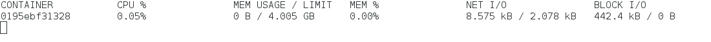
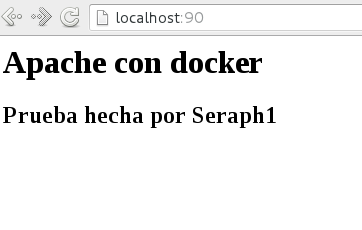

Crear una imagen Docker a partir de un archivo dockerfile.
Posted on dom 17 enero 2016 in Tutorial de Linux • 3 min read
En los artículos anteriores sobre docker se tiene:
- Instalar Docker en Debian Jessie
- Uso de Docker en Debian Jessie (parte 1)
- Uso de Docker en Debian Jessie (parte 2)
En este artículo se muestra como construir una imagen Docker a partir de un archivo llamado Dockerfile.
Se usará una imagen de Debian como base que a partir de allí se tendrá una con apache corriendo, en el directorio /var/www/html se tendrá un archivo index.html con dos encabezados html que mostrarán que se tiene corriendo apache por medio de docker.
Lo primero que se tiene que hacer es crear el archivo Dockerfile en un directorio por ejemplo dockerbuilds, el archivo contendrá lo siguiente:
FROM debian
MAINTAINER Ernesto Crespo
RUN apt-get update
RUN apt-get install apache2 -y --force-yes
RUN echo "<h1>Apache con docker</h1> <h2>Prueba hecha por Seraph1</h2>" > /var/www/html/index.html
EXPOSE 80
ENTRYPOINT apache2ctl -D FOREGROUND
Descripción del archivo:
- FROM:Lo primero que se define es la imagen que se va a usar, en este caso Debian.
- MAINTAINER: El nombre del mantenedor de la imagen.
- RUN: Instrucción que permite ejecutar comandos dentro del contenedor. En este caso se actualiza la lista de paquetes de Debian, se instala apache y se copia el contenido de index.html en la ruta que le corresponde.
- Se expone el puerto 80 del servidor apache.
- Se indica que se ejecute apache en primer plano cada vez que se inicie el contenedor.
Luego de tener el archivo listo, se ejecuta el comando para la creación de la imagen usando dicho archivo:
docker build -t ecrespo/apache .
Se define que el nombre de la imagen será ecrespo/apache.
Al terminar de realizar el proceso de construcción se tendrá la imagen en el equipo:
$docker images
REPOSITORY TAG IMAGE ID CREATED VIRTUAL SIZE
ecrespo/apache latest ae0d4610be9d About a minute ago 197.8 MB
debian-django latest 36896e115e32 2 weeks ago 601.1 MB
ecrespo/empaquetadodebian latest ee5883957d64 2 weeks ago 656.9 MB
debian latest 8b9a99209d5c 6 weeks ago 125.1 MB
sonarqube latest dd47274097f7 10 weeks ago 942.5 MB
debian 8.1 f05335696a9b 4 months ago 125.2 MB
Se tiene la imagen de 197.8MB.
Para terminar se ejecuta la imagen que se llama ecrespo/apache, la instancia se llamará apache1, se captura el puerto local 80 y lo muestra en el equipo como puerto 90.
docker run --name apache1 -d -p 90:80 ecrespo/apache
Se lista los procesos de docker y se tiene el contenedor de apache corriendo:
$docker ps
CONTAINER ID IMAGE COMMAND CREATED STATUS PORTS NAMES
0195ebf31328 ecrespo/apache "/bin/sh -c 'apache2c" 44 minutes ago Up 44 minutes 0.0.0.0:90->80/tcp apache1
El nombre es ecrespo/apache, el comando que se ejecuta es el de apachectl, tiempo de creado 44 minutos y arriba desde hace 44 minutos, el nombre de la instancia es apache1 y redirecciona el puerto 90 al puerto 80.
Con docker stats pasando el id del contenedor se puede tener información de consumo de recursos de dicho contenedor.

Ahora se abre el navegador con localhost:90 y se tiene lo que muestra el mensaje que veremos en la siguiente figura:

Para detener el contenedor se ejecuta docker stop con el id del contenedor:
$ docker stop 0195ebf31328
0195ebf31328
Al listar los procesos se nota que ya no se tiene el contenedor apache1 corriendo.
$ docker ps
CONTAINER ID IMAGE COMMAND CREATED STATUS PORTS NAMES
En este artículo se muestra una pequeña personalización del apache, poco a poco se irá aumentando el nivel de personalización de los contenedores para tener servicios reales en funcionamiento.
¡Haz tu donativo! Si te gustó el artículo puedes realizar un donativo con Bitcoin (BTC) usando la billetera digital de tu preferencia a la siguiente dirección: 17MtNybhdkA9GV3UNS6BTwPcuhjXoPrSzV
O Escaneando el código QR desde la billetera: